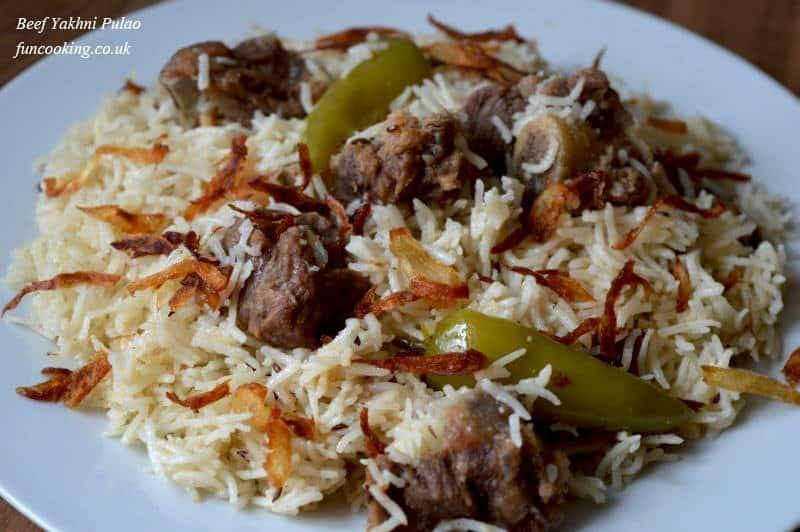

Beef Pulao
Home

Description
Beef yakhni pulao is wonderful pulao recipe in which rice cooked in beef stock. On Eid-ul-Adha Pakistani
people love to make it with fresh meat and it tastes really good when cooked with fresh meat.
Ingredients
for Beef stock
- beef with bones meat 500-550 g
- onion 1 medium
- garlic cloves 4-5
- ginger 1 inch piece
- whole coriander 1 tbsp
- fennel seeds 1 tbsp
for rice
- basmati rice 2-1/2 cup (almost 500 g)
- ginger garlic paste 1 tbsp
- onion 1 big
- salt 2-1/2 tsp or as required
- green chilies 3-4 (add more if you like spicy)
- yogurt 250 g
- white vinegar 1 tbsp
Instructions
- Prepare the Beef Stock (Yakhni)
- In a pressure cooker, combine the beef, water, sliced onion, garlic, ginger, coriander seeds, fennel seeds, and whole spices.
- Cook on medium-low heat for 15-20 minutes (or until the beef is 80% tender).
- Separate the beef pieces and reserve the remaining liquid stock. Measure the liquid to ensure you have around 3.5 to 4 cups of stock.
- Build the Masala Base
- Heat the oil or ghee in a large pot (or heavy-bottomed pan) over medium heat. Add the sliced onions and fry until golden brown.
- Add the cumin seeds and ginger-garlic paste, stirring for 1-2 minutes until fragrant.
- Add the boiled beef pieces and sauté for 3-5 minutes, sealing in the spices.
- Pour in the whisked yogurt and cook until the oil separates. Add the slit green chilies and garam masala.
- Cook the Rice
- Add the reserved yakhni to the pot. (If the stock measures less than 4 cups, add extra plain water to make the total 4 cups).
- Add salt to taste. Bring the mixture to a rapid boil.
- Drain the soaked basmati rice and add it to the boiling liquid. Stir gently and let it cook on high heat until most of the liquid is absorbed and bubbles appear on the surface.
- Steam (Dum)
- Lower the heat to the absolute minimum.
- Cover the pot with a tight-fitting lid wrapped in a clean kitchen towel (to trap the steam). Let it cook on dum (steam) for 10-15 minutes.
- Turn off the heat and let it rest for 5 minutes before opening. Fluff gently with a fork and serve hot with raita.